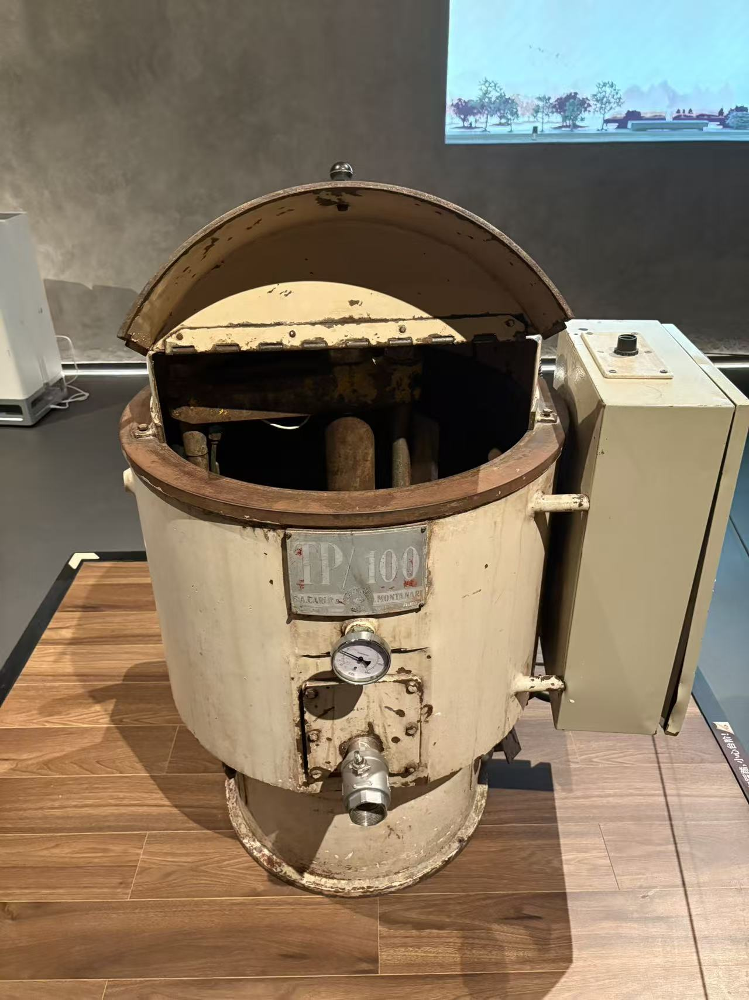
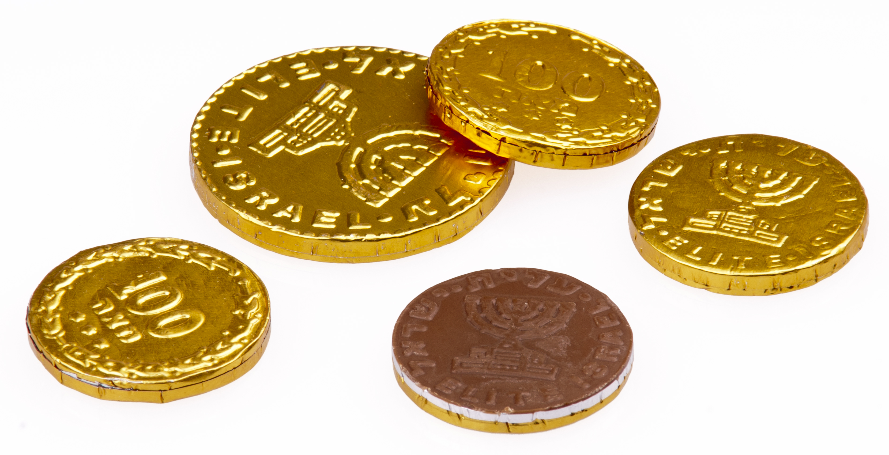

跟着物料走一遍
每一步，发生了什么？
01
基料准备 资料补全
准备巧克力基料
- 进入
- 完成精磨和精炼的巧克力
- 得到
- 可用于后段加工的巧克力料
沿用基础巧克力主线获得基料，或采购成品巧克力用于再加工。配方决定风味与流动性，币形外观不会改变其原料逻辑。
看懂这一点
金币机不是把可可豆直接变成金币的整厂设备。
02
调温 · 圆片成型 实拍对应＋工艺补全
调温后，制成币形坯
- 进入
- 液态巧克力
- 得到
- 待冷却的币形巧克力坯
对可可脂体系的巧克力进行适合配方的调温，再制成尺寸一致的圆片。使用浇模路线时，还需要振动排气。
看懂这一点
这个阶段主要解决巧克力本体的形状和结晶状态，而不是外层箔纸。


你的实拍 · 照片 15
03
冷却 · 整理 资料补全
冷却，使币坯能够被输送和包覆
- 进入
- 成型后的币坯
- 得到
- 保持形状的巧克力圆片
受控冷却并在相应路线下脱模，检查外形和完整性，再送往覆箔设备。币坯要能承受后面的输送和包装动作。
看懂这一点
Loynds 的公开路线采用已成型圆片进入覆箔压印机；不能默认所有金币机都同时承担熔融浇注。
04
覆箔 · 包合 · 压纹 实拍对应＋工艺补全
让箔材包合，并压出图案
- 进入
- 巧克力圆片与上下箔材
- 得到
- 有金币外观的单枚巧克力
将箔材与币坯对位，通过包合、压制等动作形成贴合的包装和币面纹样。实拍展牌明确说明上下箔压合及图案压制的作用。
看懂这一点
覆箔与压印赋予“金币感”；本页不推定展出机的具体模具结构或操作设定。
 你的实拍 · 照片 21
你的实拍 · 照片 21

05
检验 · 外包装 资料补全
检查外衣与币坯，再做外包装
- 进入
- 已包覆的金币巧克力
- 得到
- 可储运的金币巧克力产品
按产品方案检查形状、箔材贴合和包装完整性，再装袋或装盒。储运仍需保护巧克力，避免不适宜的温度变化。
看懂这一点
金色来自包装外观，不代表巧克力里加入了金。箔材也不等于可食用外壳。


资料图 · 非本次参观多懂一点
容易混淆的地方
形状与图案不是同一个问题
圆片的尺寸属于巧克力坯成型；箔材的贴合与压印属于包装及外观加工。实际设备可能整合工序，但理解时应先拆开。
先学哪条工艺？
先读基础巧克力中的精磨、精炼和调温。金币页从已具备基料开始，不重复展开可可采后处理。
哪些信息仍未知？
照片不足以确定这台展品的进料温度、模具压力、速度和历史配套线，不能把其他厂家设备参数套过来。
30 秒自测
金币机是不是直接把可可豆压成金色的巧克力？
想好了吗？展开答案
不是。先有经过加工的巧克力基料和币形坯，再通过覆箔、包合与压印等动作形成金币外观。
有据可查
照片与参考资料
实拍依据来自你拍下的机器与展牌；行业资料用于补齐未拍到的步骤，不代表这些展品曾属于同一条生产线。
查看补充资料与外部链接（5 项）
- Callebaut · 从可可豆到巧克力 ↗
- Callebaut · 调温方法与产品曲线 ↗
- Callebaut · 模制巧克力的冷却与收缩 ↗
- Loynds · 金币覆箔压印机（PDF） ↗
- Callebaut · 糖果储存与包装 ↗
外部资料需要联网。本地正文和照片无需联网。